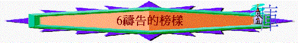

引言：在聖經中你最欣賞那位禱告的人？
1.畫夜禱告的摩西
「我因耶和華說要滅絕你們，就在耶和華面前照舊俯伏四十晝夜。」申9:25
∼當摩西上山等候神話語之時間，以色列民出現了一件危機，就是在山下拜金牛犢，惹動神的怒氣，神要滅絕他們；在這危機中，作為事奉 神的僕人
∼摩西，他可以作什麼呢？哭泣？叫以色列民逃走，逃避神，自己想方法解決這危機？完全不是！他只作了一件事情，就是照舊在 神面前俯伏四十晝夜，目的只有一個，為百姓代求。
∼他所能作的只有這樣，亦只有這才是最有效的方法。結果神真是應允了他。在建立神的家之先，可能我們在團契�堙A在教會中，看到很多危機，很多問題，有時很想用許多方法即時去解決。但記著最好的方法就像摩西一樣「為他們代求，」要相信禱告！有時一個代求勝過靠自己埋頭苦幹做十件工作。
2.傾心吐意的哈拿
「哈拿心裡愁苦，就痛痛哭泣，祈禱耶和華，許願說：「萬軍之耶和華啊，你若垂顧婢女的苦情，眷念不忘婢女，賜我一個兒子，我必使他終身歸與耶和華，不用剃頭刀剃他的頭。」」撒上1:10-11
〜在希伯來人的觀念，沒有生育是女人最大的恥辱
〜哈拿舒發她的感受，在神面前痛痛哭泣
，向神坦然求得兒子
3.不息代求的撒母耳
「至於我，斷不停止為你們禱告，以致得罪耶和華。我必以善道正路指教你們。」撒上12:23
4.凡事問神的大衛
A.求問神---可不可以攻打敵人
「所以大衛求問耶和華說：「我去攻打那些非利士人可以不可以？」耶和華對大衛說：「你可以去攻打非利士人，拯救基伊拉。」」撒上23:2
B.求問神---會否成功
「大衛又求問耶和華。耶和華回答說：「你起身下基伊拉去，我必將非利士人交在你手裡。」大衛和跟隨他的人往基伊拉去，與非利士人打仗，大大殺敗他們，又奪獲他們的牲畜。這樣，大衛救了基伊拉的居民。」撒上23:4-5
〜結果大衛救了基伊拉的居民，而亞希米勒兒子也拿着以弗得逃到此地尋找大衛。
〜以前的選民，會用祭司的衣物----以弗得作尋求神之用
C.求問神---基伊拉人會否將他們交出來
「於是掃羅招聚眾民，要下去攻打基伊拉城，圍困大衛和跟隨他的人。大衛知道掃羅設計謀害他，就對祭司亞比亞他說：「將以弗得拿過來。」」撒上23:8-9
「大衛又說：「基伊拉人將我和跟隨我的人交在掃羅手裡不交？」耶和華說：「必交出來。」大衛和跟隨他的約有六百人，就起身出了基伊拉，往他們所能往的地方去。有人告訴掃羅，大衛離開基伊拉逃走；於是掃羅不出來了。」撒上23:12-13
〜掃羅攻打基伊拉，大衛擔心基伊拉人會忘恩負義，大衛和跟隨他的人交出來，結果他求問神，神說必交出來，所以大衛離開此地走了。
5.自卑認罪的瑪拿西
「他祈禱耶和華，耶和華就允准他的祈求，垂聽他的禱告，使他歸回耶路撒冷，仍坐國位。瑪拿西這才知道惟獨耶和華是神。」代下33:13
「瑪拿西其餘的事和禱告他神的話，並先見奉耶和華以色列神的名警戒他的言語，都寫在以色列諸王記上。他的禱告，與神怎樣應允他，他未自卑以前的罪愆過犯，並在何處建築邱壇，設立亞舍拉和雕刻的偶像，都寫在何賽的書上。」代下33:18-19
∼如此不好的王，當他願自卑禱告，神也應允他
6. 為人認罪的以斯拉
「以斯拉禱告，認罪，哭泣，俯伏在神殿前的時候，有以色列中的男女孩童聚集到以斯拉那裡，成了大會，眾民無不痛哭。」拉10:1
7.素常一樣的但以理
「王啊，現在求你立這禁令，加蓋玉璽，使禁令決不更改；照瑪代和波斯人的例是不可更改的。」於是大利烏王立這禁令，加蓋玉璽。」但6:8-9
「但以理知道這禁令蓋了玉璽，就到自己家裡（他樓上的窗戶開向耶路撒冷），一日三次，雙膝跪在他神面前，禱告感謝，與素常一樣。」但6:10
∼王下了命令在三十日內不可向神求什麼，但以理卻一日三次，雙膝跪在他神面前，禱告感謝，與素常一樣，而「素常一樣」真實的信仰是不會受時間、人物、壓力、危機而有所改變，減少遷就的
8. 退到曠野的耶穌
「次日早晨，天未亮的時候，耶穌起來，到曠野地方去，在那裡禱告。」可1:35
「耶穌卻退到曠野去禱告。」路5:16
9.一生在殿的亞拿
「又有女先知，名叫亞拿，是亞設支派法內力的女兒，年紀已經老邁，從作童女出嫁的時候，同丈夫住了七年就寡居了，現在已經八十四歲（或作：就寡居了八十四年），並不離開聖殿，禁食祈求，晝夜事奉神。」路2:36-37
10.蒙神記念的哥尼流
「在該撒利亞有一個人，名叫哥尼流，是「義大利營」的百夫長。他是個虔誠人，他和全家都敬畏神，多多賙濟百姓，常常禱告神。有一天，約在申初，他在異象中明明看見神的一個使者進去，到他那裡，說：「哥尼流。」哥尼流定睛看他，驚怕說：「主啊，什麼事呢？」天使說：「你的禱告和你的賙濟達到神面前，已蒙記念了。」徒10:1-4
11.專心靠神的寡婦
「那獨居無靠、真為寡婦的，是仰賴神，晝夜不住的祈求禱告。」提前5:5